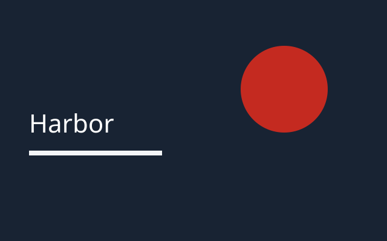

Field notes from the harbor workshop
This is a local sample page. RankMiso reads it in the browser and reports only what it can measure. Nothing here is a search ranking.
What this page includes
Title and description
The title names the workshop. The description says this page stays on this computer.
Pictures

Notes from the room
Morning
The group compared headings, links, and the article markup already on the page.
Afternoon
They kept the outline to one topic and one supporting section.
Links on this page
On this sample
Other sites
Closing notes
The workshop ended when the outline, the article markup, and the link list were all visible without leaving the page.